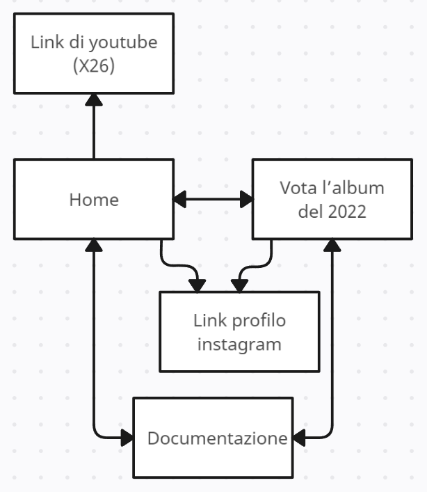
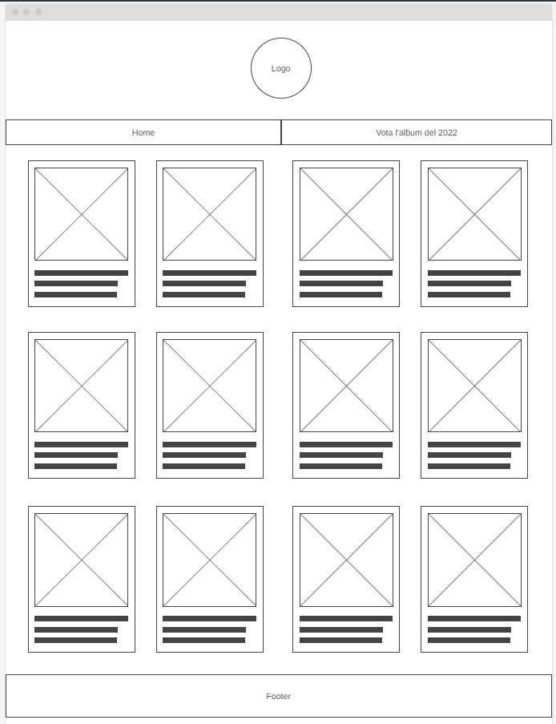
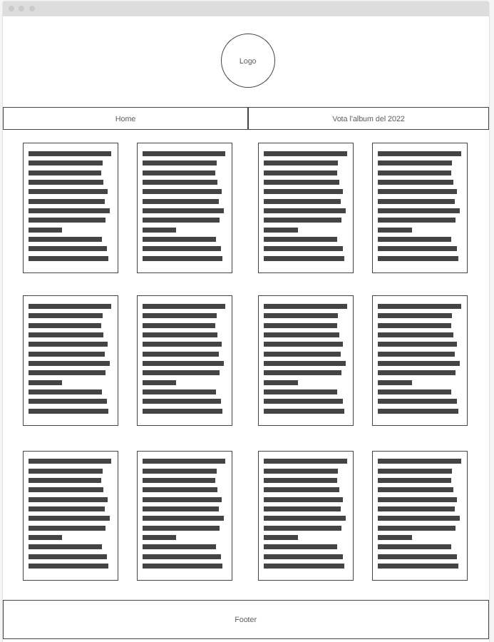
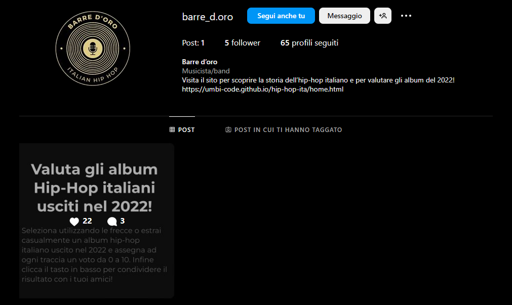

Abstract
Barre d'oro è un sito dedicato all'hip-hop italiano che mira a raccontare la storia di questo genere musicale dalla sua nascita fino ad arrivare ai giorni nostri. Una delle caratteristiche distintive del sito è la possibilità offerta a ogni visitatore (che presumibilmente sarà un appassionato del genere) di valutare gli album hip-hop italiani più rilevanti del 2022. In una sezione apposita, gli utenti hanno la libertà di assegnare un voto da 0 a 10 ad ogni brano presente nell'album. Il sito calcola quindi la media dei voti espressi, fornendo così una valutazione complessiva dell'album da parte dell'utente.
Project Management Plan
-
Benchmarking
Obiettivi:
L'obiettivo del sito è quello di informare l'utete sulla storia di questo genere musicale e anche quello di poter valutare i più importanti album hip-hip usciti nel corso del 2022.
Target utente:
Il target utente al quale si rivolge il sito è quello di persone appassionate al genere hip-hop (italiano), individuabile nella fascia di età compresa tra i 14 e i 40 anni circa, fatta eccezione per alcuni casi particolari.
Competitors:
Per quanto riguarda la sezione del sito in cui viene raccontata la storia dell'hip-hip lì abbiamo numerosi competitors quali: Rolling Stones, Outpump music, Esse magazine...ecc. In generale parliamo di testate giornalistiche che trattano in modo approfondito questi argomenti. Per quanto riguarda invece la sezione del sito in cui è possibile votare gli album, non ho trovato nessun sito che faccia una cosa del genere. Esistono, però, video su, ad esempio, Tik Tok in cui alcuni utenti hanno caricato dei video in cui criticavano gli album musicali appena usciti, con una metodologia simile a quella proposta su questo sito. Questi utenti potrebbero rappresentare dei potenziali mezzi per diffondere il sito, in quanto potrebbero sfruttare la pagina dei voti degli album per condividere le loro impressioni sui social con maggiore facilità.
-
Struttura & layout
-
Architettura del sito:
Home: in cui viene raccontanta la storia dell'hip-hop e sono presenti collegamenti a fonti esterne per permettere all'utente di ascoltare il brano o l'album citato nel testo (in modo gratuito da youtube).
Vota l'album del 2022: in cui l'utente può scegliere (o estrarre casualmente) un album hip-hop italiano uscito nel 2022 e valutarlo.
Documentazione: in cui vengono descitti gli aspetti tecnici del sito.
-
Wireframe:
Home (schede viste di fronte)
Home (schede viste di retro)

Vota l'album del 2022
Look & feel:
Il font che ho utilizzato in tutte le pagine si chiama "Montserrat (sans-serif)" e l'ho scelto perché si tratta di un font moderno che si sposa con lo stile grafico del sito. La palette cromatica utilizzata è composta da un contrasto di grigi e di elementi dorati che riprendono i colori del logo e del nome. Lo stile a finestre è ispirato (assieme alla scelta dei colori utilizzati) a quello di Spotify.
-
-
Linguaggi e strumenti
Linguaggi:
HTML, CSS e Javascript.
Strumenti:
Google Analytics: per il conteggio delle visite al sito;
Google Fonts: per il font del sito;
VS Code: per la scrittura del codice;
Canva: per il logo del sito;
Wireframe.cc: per disegnare il wireframe delle pagine;
GitHub: per la pubblicazione del sito;
Icons8 e Font Awesome: per le icone;
Communication Strategy
-
Background:
-
Home:
Nella home abbiamo un layout che volutamente appare molto simile a quello presente nella versione pc di Spotify, questo aspetto rende il sito meno originale. Tuttavia la sua originalità sta nel fatto che fa qualcosa che Spotify non ha mai fatto, in quanto passando col mouse (o toccando da smartphone o tablet) sopra ogni riquadro esso ruoterà su se stesso rivelando il contenuto del paragrafo. Il punto di forza di questa meccanica sta nel fatto che in questo modo la lettura risulta più interattiva e più originale rispetto alla canonica impaginazione degli articoli proposta dai competitors (titolo del paragrafo e sotto il corpo).
-
Vota l'album del 2022
Questa sezione del sito da al visitatore la possibilità di valutare gli album usciti nel 2022 e se vuole condividere il risultato con chi vuole. Questa, oltre ad essere una funzione (quasi) inedita da la possibiltà agli utenti di promuovere (anche involontariamente il sito).
-
-
Obiettivi comunicativi
Il progetto ha come obiettivo quello di creare uno spazio in cui gli i fan del genere hip-hop possano leggere la storia dellhip-hop italiano e votare gli album del 2022. Concretamente l'obiettivo che ho deciso di perseguire è quello di raggiungere almeno 20 likes su un post su instagram.
-
Target audience e messaggio
I gruppi demografici che cerca di raggiungere il sito è rappresentato dagli amanti di qusto genere, notoriamente sono giovani che amano osservare e condividere sui social i contenuti dei loro artisti preferiti. Quindi parliamo di persone che hanno un età superiore ai 14 anni (in quanto molto spesso queste canzoni contengono un liguaggio esplicito non adatto ai più giovani) e inferiore a 40 anni (in quanto essendo un genere relativamente recente rispetto agli altri è meno probabile che una persona più in là con l'eta possa apprezzare pienamente questi brani). Il messaggio che desidera trasmettere il sito è fornire un background culturale sul genere e agevolare la condivisione di opinioni sugli album tramite la sezione dedicata alla valutazione.
-
Promozione
Il sito è stato divulgato tramite passaparola e WhatsApp.
-
Valutazione dei risultati
L'obiettivo del raggiungimento di almeno 20 like su instagram è stato superato!